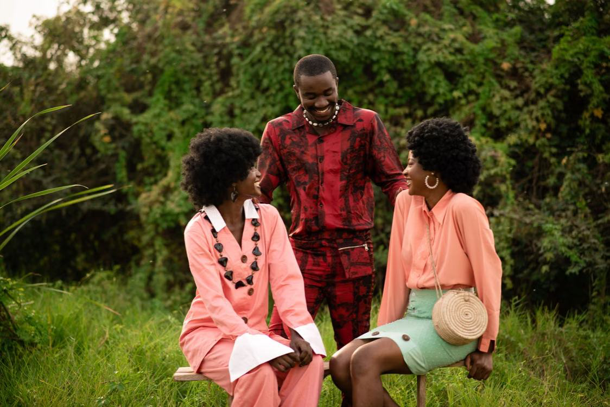
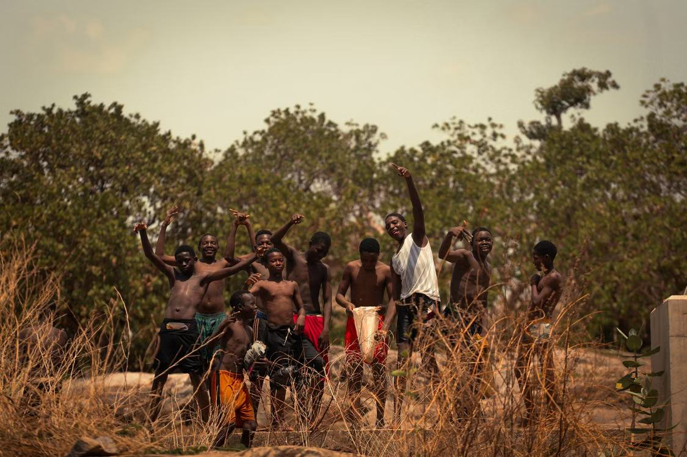
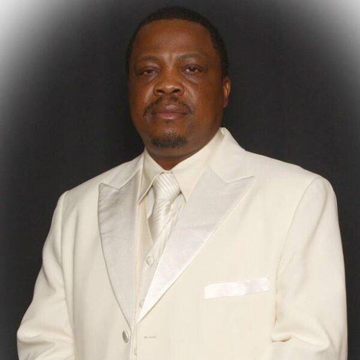

A Movement Led by the Youth
Mobilizing Africa's unemployed and underemployed youth as active drivers of economic growth, stability, and lasting social change.
An Africa where youth are empowered and inspired
We envision an Africa where youth are empowered, inspired, and active drivers of change. The vision of AYM is a stable, peaceful, and economically self-sustaining Africa with hope and opportunities for youth in every sphere of life and endeavor.
By focusing on education, technology, arts, entrepreneurship, agriculture, ecotourism, and healthcare, we aim to establish personal youth empowerment and community resilience by energizing the continent's youth population—its most critical resource—to reverse social and economic stagnation.

Educate and employ young people
Our mission is to educate and employ young people in technology, agribusiness, eco-tourism, entrepreneurship, and the creative arts to revitalize the country's potential and bring its population social and political stability.
The Solution
Mobilizing and providing employment for Africa's unemployed and underemployed youth is the key to the continent's economic growth and stability. AYM works to mobilize marginalized youth through education, training, and entrepreneurial opportunities to help move communities away from poverty, disease, and hunger—engaging them as change-makers in the rebuilding and development of Sierra Leone and across Africa.
What we do to take action
Job Creation
We design programs that foster employment through skill-building workshops and hands-on training.
Youth Training
We offer courses and mentorships in various sectors, including technology, entrepreneurship, agribusiness, and creative arts.
Community Projects
Our initiatives connect youth with real-world projects that promote development and social impact.
Strategic Partnerships
We collaborate with NGOs, educational institutions, and private sector partners to expand opportunities for youth.
The History and Story of AYM
Abu-Hassan Koroma migrated to the United States in 1991, immediately after the start of the Sierra Leone Civil War. The war (1991–2002) left an estimated 60% of young people economically and socially abandoned. At the end of the war, training alone was not enough—creating long-term alternatives for self-reliance required a broader coalition and genuine employment opportunities.
Born out of the tragedy of a decade-long civil war that displaced and abandoned an entire generation of youth.
Founded in 2000 in Wisconsin, USA, to give rural Sierra Leonean youth a path to self-reliance.
From 7 staff to a growing team, AYM created enterprises, trained youth, and built the Mattru Jong project.
A growing Pan-African network of chapters across West, East, and Southern Africa.

Want to join us and connect with individuals globally together?
Lend your skills to empower local communities and shape sustainable youth-led futures.
Become a Volunteer →Want to become a part of our AYM chapters?
Bring the movement to your city or country and lead grassroots change.
Start an AYM Chapter →Want to explore our extensive array of products?
Each purchase gives purpose and supports youth-led programs.
Explore Store →Still have questions?
Can't find the answer you're looking for? Please chat to our friendly team.